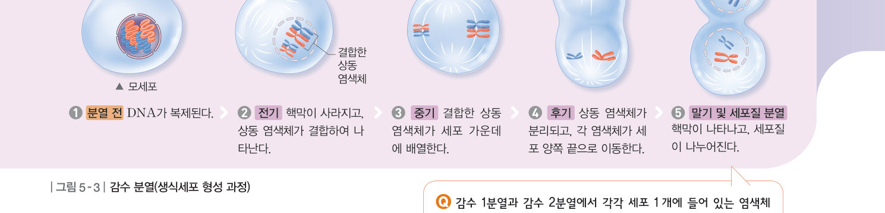
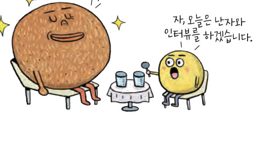
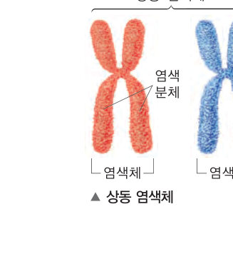
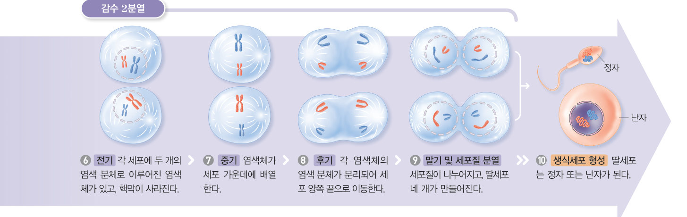
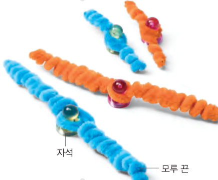

생식세포는 어떤 과정을 거쳐 만들어질까? 체세포 분열과 감수 분열을 한 화면에 나란히 놓고 단계를 넘기며, 상동 염색체와 염색 분체가 언제 분리되고 염색체 수가 어떻게 변하는지 비교해 보자.
생물은 살아 있는 동안 자신과 닮은 자손을 만드는데, 이를 생식이라고 한다. 동물은 몸에서 정자와 난자 같은 생식세포를 만들어 생식을 한다. 생식세포는 세포 분열이 두 번 연속해서 일어나 만들어지며, 이 과정을 생식세포 분열 또는 감수 분열이라고 한다.
세포가 분열하기 전 먼저 DNA가 복제된다. 감수 1분열에서는 상동 염색체(모양과 크기가 같은 염색체 쌍, 부모에게서 하나씩 물려받음)가 서로 결합했다가 분리되어 두 개의 딸세포에 각각 들어간다. 감수 1분열이 끝나면 염색체가 복제되지 않고 감수 2분열이 일어난다. 감수 2분열에서는 염색 분체가 분리되어 네 개의 딸세포에 각각 들어간다. 그 결과 염색체 수가 모세포에 비해 절반으로 줄어든 생식세포가 만들어진다.



| ⑴ 4 개의 딸세포가 만들어진다. | |
| ⑵ 세포 분열이 1 회만 일어난다. | |
| ⑶ 모세포와 딸세포에 들어 있는 염색체 수가 같다. | |
| ⑷ 상동 염색체가 결합했다가 나누어져 서로 다른 딸세포로 들어간다. |
| ⑴ 연속 2 회 분열하여 4 개의 딸세포가 만들어진다. | |
| ⑵ 감수 분열 결과 만들어진 딸세포는 모세포와 염색체 수가 같다. | |
| ⑶ 감수 1분열 전기에서는 상동 염색체가 결합하여 나타난다. | |
| ⑷ 감수 1분열이 끝나면 다시 염색체가 복제된 다음, 감수 2분열이 일어난다. | |
| ⑸ 감수 1분열에서는 염색체 수가 변하지 않고, 감수 2분열에서 염색체 수가 반으로 줄어든다. |
| 평가 기준 | 스스로 평가 |
|---|---|
| 생식세포 형성 과정의 특징을 염색체의 행동으로 설명할 수 있다. | |
| 감수 분열과 체세포 분열의 차이를 설명할 수 있다. |